TVV RESEARCH SLATE — October 26, 2026 — 12 desks
1. Major Geopolitical Conflict Developments
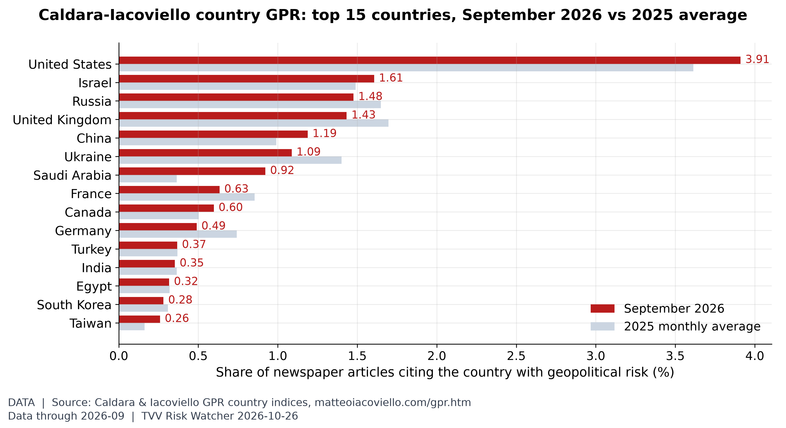
Where geopolitical risk is concentrated. In September 2026, United States (3.91% of articles, vs 3.61% in 2025), Israel (1.61%) and Russia (1.48%) led the Caldara-Iacoviello country GPR rankings. [Data; data as of 2026-09 (monthly; held: next update early Nov)] Source: matteoiacoviello.com data page
- ★ US-Iran: US forces in the region are ready to launch new, potentially major operations against Iran "within 96 hours" of an order from President Trump, two US officials told CNN; the target list includes energy, military and nuclear sites, and most expect any order after the Nov 3 midterms. Trump has not decided. Iran's Foreign Minister Araghchi said renewed war would not change Iran's positions, and the foreign ministry said messages still pass to Washington through intermediaries. CNN · CBS News live
- ★ De-escalation push: high-level delegations from Saudi Arabia, Pakistan and Turkey were in Tehran on Monday to try to avert renewed fighting, Qatari mediators were in Tehran on Sunday, in coordination with the United States. AP · Reuters via Al-Monitor · Reuters via Business Standard
- ★ Saudi-Houthi war widens: the Houthis claimed a new ballistic missile strike on Riyadh's King Khalid International Airport on Monday, a day after flights resumed, plus drone strikes on East-West Pipeline pumping stations. Coalition spokesman al-Maliki said Saudi air defenses intercepted and destroyed a ballistic missile launched toward Riyadh; there is no Saudi confirmation of the pumping-station claim. The coalition said it destroyed four ballistic missile launchers, five missile-storage tunnels and a missile depot. The 2022 truce collapsed last month when the Houthis seized much of Yemen's Red Sea coast. Al Jazeera / AFP, Reuters · ABC News live · Reuters via Al-Monitor
- ★ Hormuz (shipping data, not a reopening): JMIC Update 108 (cut-off 13:00 UTC Oct 25) keeps the Strait of Hormuz at SEVERE and logs one new attack: an LPG tanker hit by an unknown projectile about 7 nm northeast of Limah, Oman, on Oct 22, now at anchor off Khor Fakkan (no casualties). Confirmed incidents since Mar 1 now total 156. About 492 vessels are waiting outside the strait, and US-facilitated transits totalled 101 over Oct 22-24 against a 2025 baseline of about 138 a day. Iranian, US and tracking-firm traffic figures differ and should not be added together. UKMTO / JMIC Update 108 · Gulf News · Regulas Shipping
- ★ Ukraine: overnight into Oct 26 Russia fired 140 drones (70 jet-powered) and four missiles; Ukraine says it downed 112 drones and three Kh-59/69 missiles, with hits at 15 locations and at least nine injured in Zaporizhzhia, Chernihiv and Kharkiv regions, and a grain storage facility was set on fire in Chernihiv region. Russia's defense ministry claimed hits on PS-330 substations in Kharkiv and Kamianets-Podilskyi, three berths at Chornomorsk port and a cargo vessel at sea (unverified). In Russia, Voronezh's governor said a Ukrainian drone attack killed 2 and injured 17, many of them on a passing train. RBC-Ukraine · Hromadske · TASS · BBC Ukrainian
- Oleshky truce: a local ceasefire around occupied Oleshky (Kherson region) is set to start Oct 27 at 03:00 Kyiv time to allow aid delivery, route demining and civilian evacuation; it is being prepared for several days. Zelensky said Russia will try to force residents to flee to its territory. Kyiv Post · Ukrainian News · Ukrinform
- ★ Israel votes Tuesday: the final polls before the blackout show deadlock. Channel 13 has the anti-Netanyahu bloc at 54 seats and Netanyahu's camp at 50, Channel 12 has 56 vs 50, and Kan 52 vs 50, all short of 61; i24NEWS is the outlier with Netanyahu's bloc at 59. Eisenkot's Yashar leads most polls (22-23 seats vs Likud's 19-21). Arab parties (14-16 seats) could be pivotal. Polls close at 22:00 with exit polls; final results are due Nov 4. Trump endorsed Netanyahu on Truth Social. Times of Israel · i24NEWS · Al Jazeera · Gulf News live
- ★ Brazil: Lula won a fourth term in Sunday's runoff with 51.79% to Flávio Bolsonaro's 48.21%, a 4.4-million-vote margin, becoming the first president since 1988 to win after losing the first round. Bolsonaro refused to recognise the result and called for it to be annulled, which legal experts say is unlikely. Lula said Brazil "will not accept being anyone's backyard," a dig at Trump's "Donroe Doctrine." BBC · Camara dos Deputados
2. Major Terror / Security Incidents
- ★ Jordan church attack update: security forces arrested three Jordanian suspects after a roughly three-hour dawn gun battle on Monday at an abandoned house in al-Jadeeda, near Hamoud, the village of Friday's attack (Karak governorate). All three were wounded, one critically; weapons and ammunition were recovered. Authorities have not named them or any group, and no group has claimed the attack. Al Jazeera · Petra (Jordan News Agency)
- ★ Nigeria: the toll from Friday's raid on Binnari village in Taraba state rose to at least 48, police said; Amnesty International says it has confirmed 52 deaths. Gunmen on about 50 motorcycles looted shops and burned houses in a rampage of up to four hours after midday prayers; police say some victims drowned while fleeing. No group has claimed the attack. BBC
- ★ West Bank: two Palestinian gunmen killed two Israeli soldiers and wounded three at a checkpoint near Hebron on Friday before troops killed both. The follow-up Israeli operation in and around Hebron had displaced about 2,000 Palestinians by Saturday evening, according to Defense Minister Katz. Times of Israel · Times of Israel liveblog
- ★ Civil aviation threat: the Houthis say Monday's missile was aimed at Riyadh's main airport, which they call a "military target", just after it reopened. A Houthi attack on the same airport earlier this month killed 13 and wounded more than 300, the deadliest attack on the kingdom in more than a decade, and forced Saudi Arabia's flagship investment conference to be postponed to 2027. Al Jazeera / AFP, Reuters · ABC News live
- Cyber, India: Telangana's TG-iPASS business-clearance portal went offline Oct 22 after ransomware encrypted its Cloud4C-hosted database server. It holds data for about 28,000 registered companies and 7,000 trade-licence applicants. Officials say all data was decrypted and restored with no loss, and the portal is set to return after security upgrades. New Indian Express · Times of India
- Cyber, Japan: attackers broke into two API servers at Rakus Light Cloud's Blastmail email service and took information on all contract holders; mailing-list data exposure is confirmed for 344 contracts. Blastmail has been suspended since Oct 21 with no restart date. iSec News
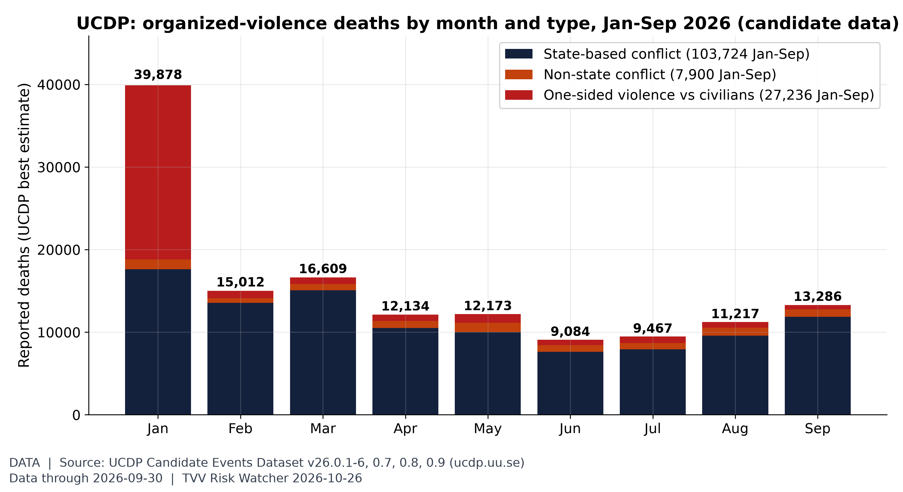
Violence against civilians in context. UCDP's candidate events record 138,860 deaths Jan-Sep 2026, 27,236 of them in one-sided violence against civilians (top: Iran 19,901, Nigeria 1,884, DR Congo (Zaire) 1,357). January's 39,878 is mostly UCDP's estimate for the Iranian government's Jan 8 killings of civilians (state, not terrorist, violence); September 13,286. Candidate data are preliminary. [Data; data as of 2026-09-30 (UCDP Candidate GED v26.0.9, released Oct 2026; preliminary)] Source: ucdp.uu.se data page
3. Earthquakes and Eruptions
- No new M6+ quake with significant casualties or damage since the Tibet M7.0 on Oct 22 (USGS PAGER orange). USGS lists four M6+ events since: Vanuatu M6.9 and M6.3 (Oct 24), Bonin Islands M6.5 and Vanuatu M6.1 (Oct 25), all PAGER green, meaning low expected casualties and losses. USGS Vanuatu M6.9 · USGS Bonin M6.5 · USGS Tibet M7.0
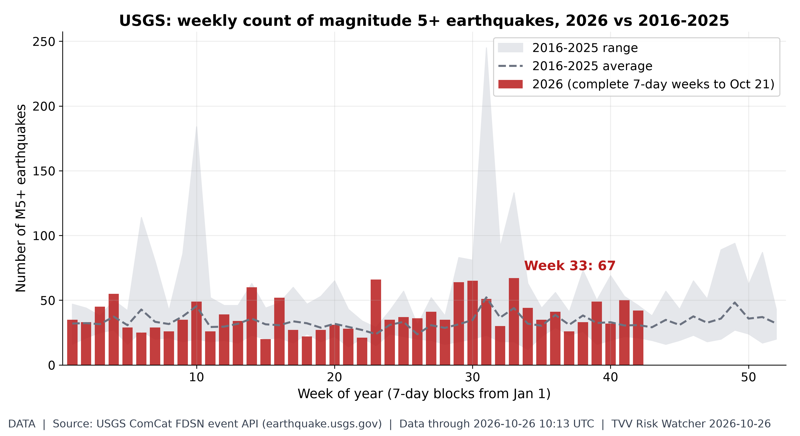
Weekly M5+ quake count. 2026 has 1,675 M5+ quakes through Oct 26 vs a 2016-25 average of 1,414 by this date (range 1,216-1,905); the busiest 2026 week was week 33 with 67. [Data; data as of 2026-10-26 10:13 UTC (USGS ComCat, pulled ~7:00 AM ET Oct 26)] Source: earthquake.usgs.gov data page
4. Solar / Space Weather
- Space weather quiet: NOAA SWPC's Oct 26 forecast shows a past-24h max Kp of 2 and a peak of Kp 3 through Oct 28, with no G1 storm and only a 1% daily chance of a radiation storm. The 27-day outlook issued Oct 26 flags Oct 31 as the next Kp 5 day. NOAA SWPC 3-day forecast · NOAA SWPC 27-day outlook
- ★ Magnetic field watch (measured): the north magnetic pole moved 454 km in 2015-2025 (45.4 km a year on average; 37.0 km a year in 2024-25, down from a 57.6 km a year peak in 2010-11) as it heads from the Canadian Arctic toward Siberia; NOAA's WMM2025 projects about 33 km a year to 2030. Drift and field weakening are the background to excursion risk, and no one can predict the timing of an excursion. Michael Hentschel's own view: 2035 at the earliest, with critical earth changes along the way. NOAA NCEI wandering poles · NOAA World Magnetic Model
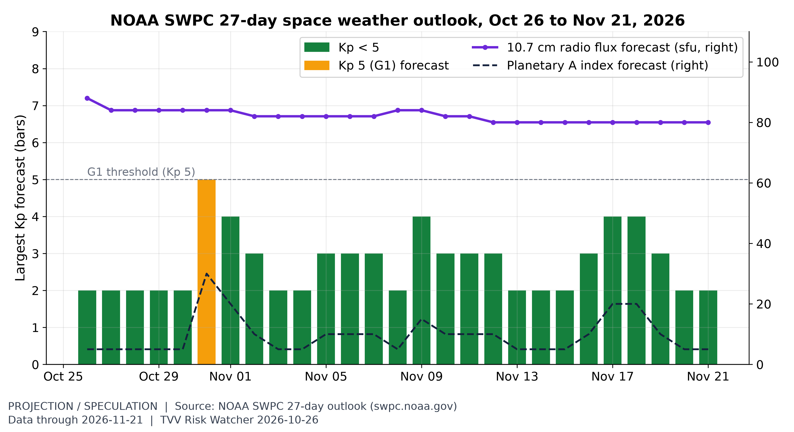
The month ahead in space weather. SWPC's 27-day outlook (issued 2026 Oct 26 0118 UTC) flags its next Kp 5 (G1-level) days on Oct 31, with radio flux 80-88 sfu. It is a recurrence-based outlook, not a storm warning. [Projection/Speculation; data as of 2026-11-21 (outlook issued 2026 Oct 26 0118 UTC; weekly product)] Source: swpc.noaa.gov data page
5. Critical Infrastructure / Transportation Disruptions
- ★ Saudi oil infrastructure: the Houthis claimed drone strikes on Saudi oil pumping stations on Monday, after weekend claims against the East-West Pipeline, Yanbu and the Rabigh refinery; there is no Saudi confirmation of any hit. Greece agreed to keep its Patriot battery in Saudi Arabia, which protects energy infrastructure at Yanbu on the Red Sea. CNBC reports traders are increasingly focused on the risk of a major hit to Saudi production, refining or export facilities. Al Jazeera / AFP, Reuters · Anadolu · CNBC
- ★ Ukraine grid and ports (Russian claims, unverified): Russia's defense ministry said overnight strikes hit PS-330 power substations at Zalyutino (Kharkiv) and Kamianets-Podilskyi, three berths at Chornomorsk port and a cargo vessel at sea. Ukrainian emergency services reported hits on a hangar, a warehouse and a grain storage facility in Chernihiv region. TASS · Hromadske
- ★ US fuel supply: the Energy Department on Friday authorised the release of up to 400,000 barrels from the Strategic Petroleum Reserve to cover a supply disruption at a Louisiana refinery. Gallo Partners CIO Michael Alfaro told CNBC that "the real challenge is refining capacity," warning of a structural problem extending into 2027 and beyond. Saudi Arabia plans to start storing crude in Singapore from the second half of 2027. CNBC
- US diesel: EIA's Oct 26 retail survey was not yet posted at build; the latest national on-highway diesel average is $6.276 a gallon (Oct 19), up 9.7 cents on the week and above the 2022 peak, with regular gasoline at $4.284. EIA Gasoline and Diesel Fuel Update
- Grid workaround: with US grid connections taking three to six years, hyperscalers are turning to on-site fuel cells. Rystad projects data-center fuel-cell investment rising to about $30 billion by 2030 from $2.8 billion in 2025, and says about 40% of projected 2030 US data-center capacity could pursue dedicated on-site power. Oracle plans up to 2.8 GW of Bloom Energy systems (1.2 GW contracted). Reuters via Indian Express
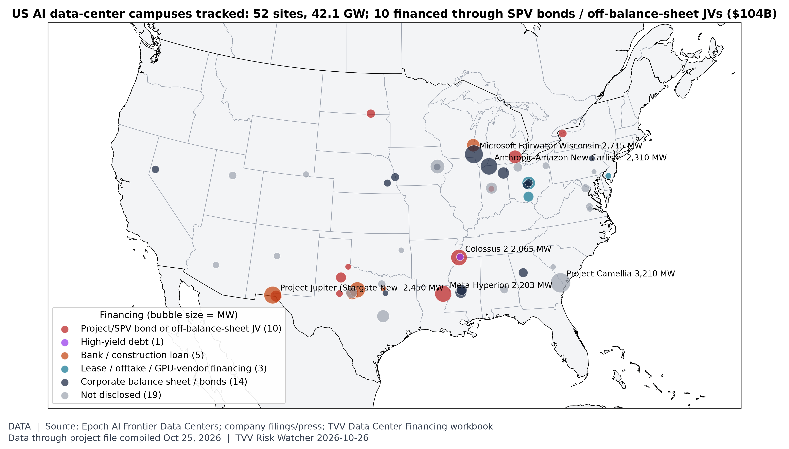
Where the AI build-out is, and how it is financed. TVV's project file tracks 74 large AI data-center campuses worldwide, 52 in the US (42.1 GW of disclosed capacity). Disclosed project financing totals $194B for US sites; 10 US campuses use SPV bonds or off-balance-sheet JVs ($104B, led by Meta Hyperion $27.3B and El Paso $12.5B). Locations approximate. [Data; data as of project file compiled Oct 25, 2026 (filings and press)] Source: epoch.ai data page
6. Econo-Metrics
- ★ Oil shock premium: Brent fell about 1.9% to $114.51 and WTI 2.2% to $101 early Monday, after Brent's 6.2% jump last week to its highest weekly close since mid-2022. Gallo Partners' Michael Alfaro estimates the geopolitical risk premium at about $20 a barrel and says Brent at $120-140 would bring more demand destruction. CNBC · Reuters via Business Standard
- ★ Central bank week: the Fed decides Wednesday Oct 28 and is expected to hold after its September hike, with traders still pricing a December hike and at least two 25bp hikes by mid-2027 (LSEG). New Zealand is widely expected to hike Wednesday; the BoJ (Oct 29-30) is seen holding at 1.25%. September PCE inflation is due Thursday and Q3 GDP, expected at 3.2%, this week. Reuters via Investing.com · Sharecast · Reuters via Business Standard
- ★ Bond and currency backdrop: the US 10-year yield is at 5.0%, off an intraday peak of 5.36% early this month. The yen is at 157.00 per dollar, the euro at $1.1204 amid French unrest (France escaped a credit downgrade last week), and sterling at $1.3346 ahead of new UK finance minister John Healey's first budget on Wednesday. Reuters via Business Standard
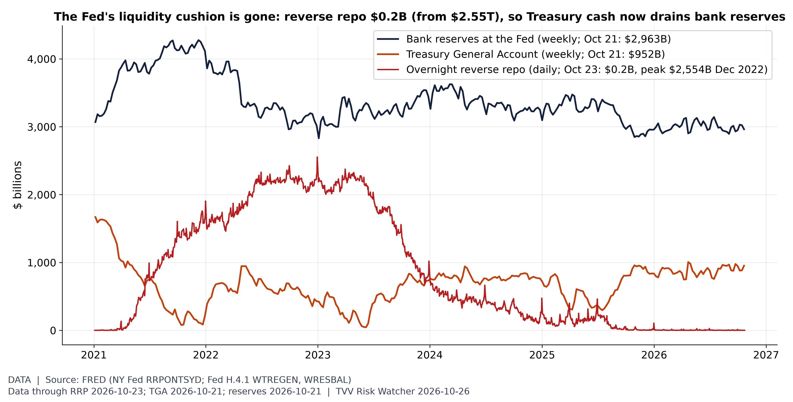
The liquidity buffer is empty. The Fed's overnight reverse repo facility held $0.2B on Oct 23, down from $2,554B (Dec 30, 2022). The Treasury's cash account was $952B (Oct 21) and bank reserves $2,963B (Oct 21); with the RRP cushion spent, further TGA rebuilds or QT come straight out of reserves. FOMC Oct 28. [Data; data as of RRP 2026-10-23; TGA 2026-10-21; reserves 2026-10-21] Source: fred.stlouisfed.org data page
7. Epidemic / Bio-Metrics
- ★ Ebola (Bundibugyo) in DR Congo: INSP SitRep 163 (Oct 24) counts 9,964 confirmed cases and 4,841 deaths, up 148 cases and 84 deaths in two days from SitRep 161 (9,816 and 4,757). The case fatality rate stays near 49%. Ebola tracker SitRep archive · CDC situation summary
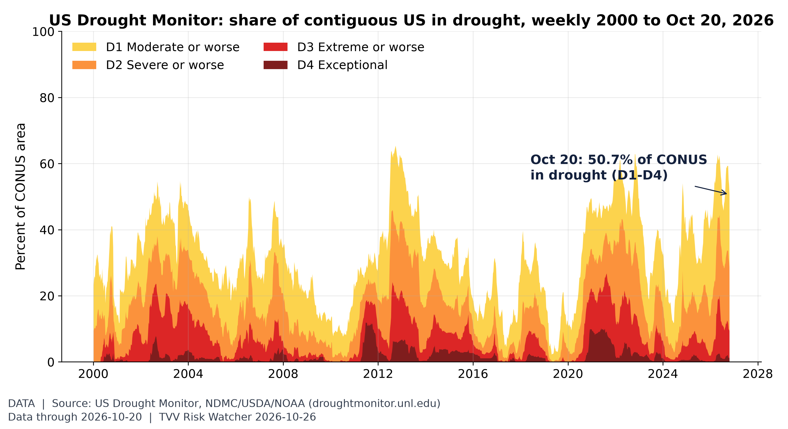
Critical Water Shortage, US view. 50.7% of the contiguous US was in drought (D1-D4) on the map valid Oct 20, higher than in 91% of weeks since 2000; 9.4% was extreme or worse. [Data; data as of 2026-10-20 (weekly map; next map due Thu Oct 29)] Source: droughtmonitor.unl.edu data page
8. Gold and Silver
- ★ Gold back above $4,000: spot gold was $4,017.70 and silver $54.13 at 07:50 ET Monday (gold-api.com), a gold-silver ratio of about 74, after gold fell more than 4% last week. Reuters put gold at $4,001 in early Asian trade. gold-api.com gold · gold-api.com silver · Reuters via Business Standard
- Yen angle before the BoJ: with the yen at 157.00 per dollar Monday and the BoJ expected to hold at 1.25% on Oct 29-30, gold priced in yen remains far above its 2020 level (see the gold-in-yen chart). Reuters via Business Standard · Sharecast

Gold in yen: the weak-currency hedge. World Bank monthly gold averaged $4,319/oz in September 2026, 2.8x Jan 2020; priced in yen (FRED monthly-average JPY) it was ¥675,566/oz, 4.0x, because the dollar bought 156.4 yen vs 109.3 in Jan 2020. Latest daily rate 158.00 (Oct 16). BoJ decides Oct 29-30. [Data; data as of gold 2026-09 (monthly, Pink Sheet); JPY 2026-10-16] Source: worldbank.org data page
9. Stock Averages and Nasdaq Major Movers
- ★ Weekly tape, week to Fri Oct 23: the S&P 500 fell 0.47% to 7,623.68, its second straight weekly loss, and the Nasdaq 0.71% to 25,955.34, while the Russell 2000 rose 2.00% and the Dow 0.41%. Japan's Nikkei fell 4.03% and Hong Kong's Hang Seng 4.52%. T. Rowe Price weekly · Moby Tick weekly · Reuters via Investing.com
- ★ Monday open: at 05:19 ET Dow futures were up 0.49%, S&P 500 futures 0.3% and Nasdaq 100 futures 0.25% as oil eased; Tesla led megacaps premarket (+2.1%). In Europe the DAX rose 0.7%, the CAC 40 0.9% and the FTSE 100 0.5% in early trade. Reuters via Investing.com · AP
- ★ Brazil shock: US-listed Brazilian shares tumbled premarket after Lula's win, a result that defied polls; the iShares Brazil ETF was quoted 27.3% lower. Reuters via Investing.com
- ★ Asia Monday: Japan's Nikkei 225 fell 0.80% to 62,189.65 and Korea's Kospi 1.46% (Kosdaq -3.62%) as chip stocks slid on renewed AI-spending doubts; Renesas and Tokyo Electron fell more than 3%. Hong Kong's Hang Seng rose 0.51% and China's CSI 300 was flat. Korea's market has shed almost 19% this month. Sharecast · Reuters via Business Standard
- Earnings week: about a third of S&P 500 companies report, including Alphabet, Microsoft and Amazon. Consensus: Microsoft $90.6 billion revenue and $4.73 adjusted EPS, Amazon $202 billion and about $1.97, Alphabet $128 billion and $3.00. Intel, Sandisk also report. Reuters via Business Standard · Sharecast
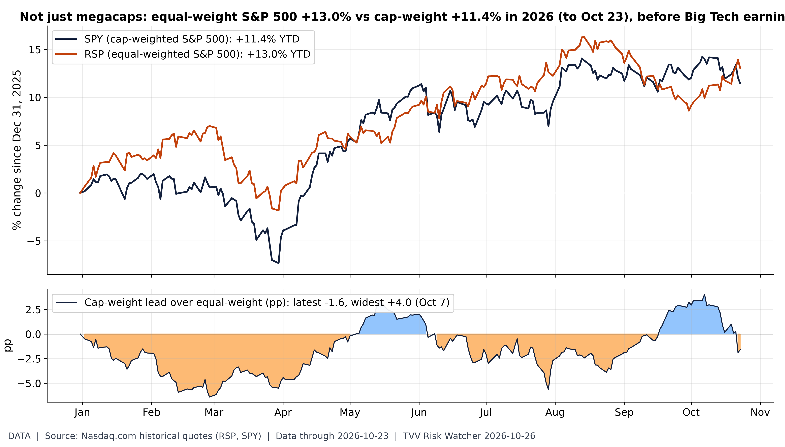
The average stock is beating the megacaps. Through Fri Oct 23, SPY (cap-weighted) is +11.4% in 2026 vs +13.0% for RSP (equal-weighted), so cap-weight trails by 1.6 pp (cap-weight lead peaked at +4.0 pp on Oct 7; deepest lag -6.4 pp on Feb 27). The equal-weight lead means 2026 gains are broader than the megacap story; Big Tech results Oct 28-29 test whether cap-weight catches up or falls further behind. [Data; data as of 2026-10-23 (weekly tape, Fri close)] Source: nasdaq.com data page
10. Polymarket and Kalshi Sentiment Highlights
- ★ Israel on the eve of the vote (Polymarket, Oct 26 morning): Eisenkot 56.65% to be the next PM (up 5.3 points in a day), Netanyahu 26.5% (down 2) and Bennett 12.5% (down 2). Any coalition winning a majority slipped 2 points to 15.5%. Polymarket Israel PM · Polymarket Israel majority
- ★ Oil (Polymarket, Oct 26): with WTI near $101, October WTI touching $105 fell 27 points to 49% and $110 17 points to 14%; a dip to $100 jumped 22.5 points to 81.5%. Polymarket WTI October
- ★ Fed (Polymarket, Oct 26): a hold on Oct 28 is 95.15% and a 25bp hike 4.5%. Polymarket Fed October
- Iran diplomacy (Polymarket, Oct 26): a final US-Iran nuclear deal by Dec 31 is 13.5%; Iran agreeing to end uranium enrichment by Dec 31 rose 3.6 points to 13.35%; a senior US-Iran diplomatic meeting by Oct 31 is 4.5% (32.5% by Dec 31). Polymarket US-Iran nuclear deal · Polymarket Iran enrichment · Polymarket US-Iran meeting
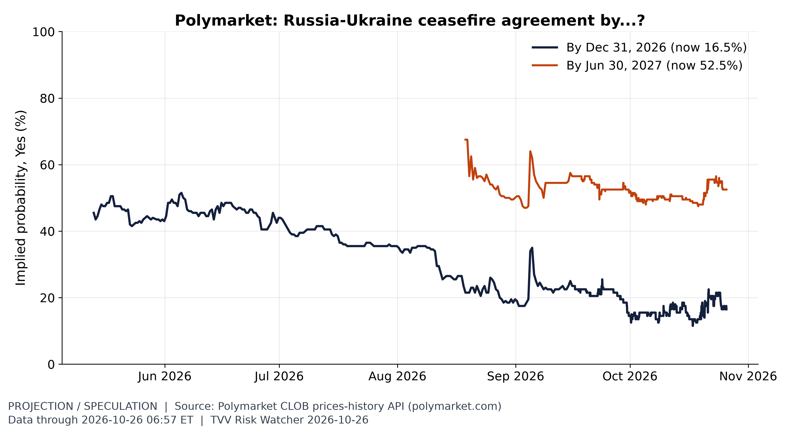
Ukraine ceasefire odds. Odds of a Russia-Ukraine ceasefire by Dec 31 are 16.5% (from 46% in May); by mid-2027 they are 52.5%. [Projection/Speculation; data as of 2026-10-26 06:57 ET] Source: polymarket.com data page
11. Tech-Metrics
- ★ AI lab security: Cathedral, a months-old cybersecurity start-up founded by former DOGE staffers, told Anthropic its researchers penetrated sensitive internal data and messaging systems by exploiting flaws in widely used business software for administrative and sales work, according to a draft report reviewed by The Washington Post, which says the break-in took 12 hours. Washington Post
- ★ Chip selloff in Asia: Renesas and Tokyo Electron fell more than 3% and Korea's Kosdaq lost 3.62% as doubts over AI-infrastructure returns resurfaced ahead of results from Microsoft, Alphabet and Amazon. Sharecast
- SoftBank plans $50 billion of investments in Malaysia in AI, new technologies and data centers, Prime Minister Anwar Ibrahim said, naming Kuching (Sarawak) and peninsular Malaysia as locations; it is a proposed plan, not a signed deal. CNBC · Japan Times
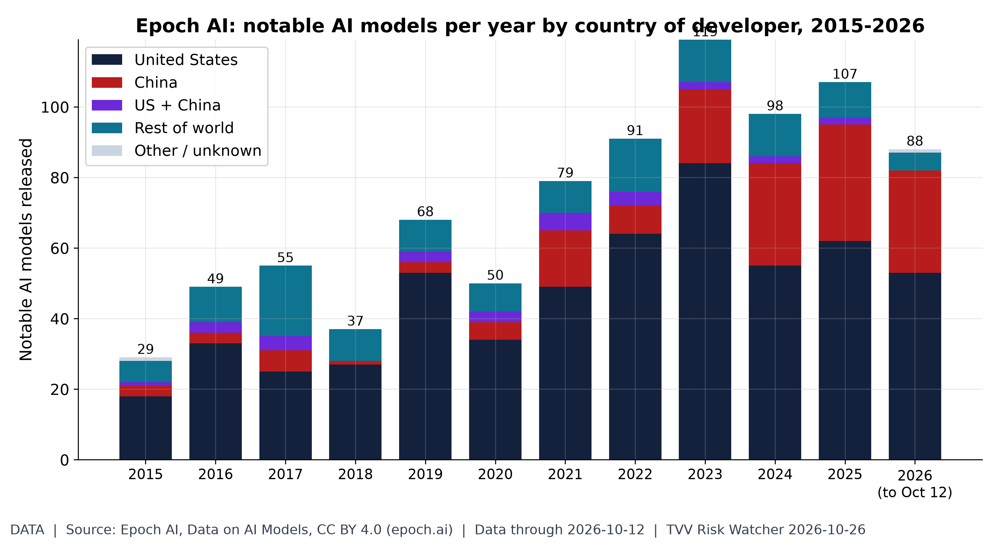
The US-China AI model race. Epoch's database lists 88 notable AI models for 2026 to Oct 12: 53 from US organizations and 29 from Chinese ones (2025: 62 US, 33 China, 107 total). Recent years fill in as Epoch adds models. [Data; data as of 2026-10-12 (latest model in dataset; downloaded Oct 26)] Source: epoch.ai data page
12. AI Hypergrowth Risks
- ★ Financing squeeze: Elon Musk wrote on X that debt markets have "almost entirely shut off access to money" for companies without substantial revenue outside AI data centers, predicting "guppy-level death and consolidation" for the 200+ neoclouds, and said SpaceX closed $40 billion of debt for GPUs. Nebius, CoreWeave and Iren fell more than 4% premarket before paring losses; CoreWeave and Nebius are down more than 30% this month and Iren 40%, after CoreWeave's five-year CDS spread hit distress levels. Nvidia's Jensen Huang says neocloud demand is "off the charts" and the gap is working capital. CNBC · Reuters via StreetInsider
- ★ Stranded-compute warning: Chamath Palihapitiya, to whom Musk was replying, forecast more "partially stranded compute" in 2027 than expected, bought and paid for but earning below its cost of capital, calling 2027 a year that "will clear out a bunch of wrong/bad bets." Meta last week raised its AI spending forecast again and said it would sell new stock to help pay for it. CNBC · Reuters via Investing.com
- ★ Hype vs firm demand: South Korea's energy minister said the government will scale back projected AI data-center power demand and reflect only confirmed demand in the 12th electricity plan, because "not much demand has actually been firmed up." The plan targets 18.4 GW of AI data centers by 2035. Of 522 AI data-center projects (3.4 GW) that applied for grid assessments as of Q1, only 10 (1 GW) have secured power, and SK's 4 GW plan has no investment details yet. Seoul Economic Daily
- ★ Dependency risk, again: Anthropic logged two more Claude error incidents on Oct 25, 30 minutes (06:05-06:35 UTC, Sonnet 5.5 and other models, across claude.ai, the API, Claude Code and Cowork) and 21 minutes (08:08-08:29 UTC, Fable 5.1), after more incidents Oct 23-24. Anthropic says it identified the causes but has not disclosed technical details. MUVO incident report · Claude status
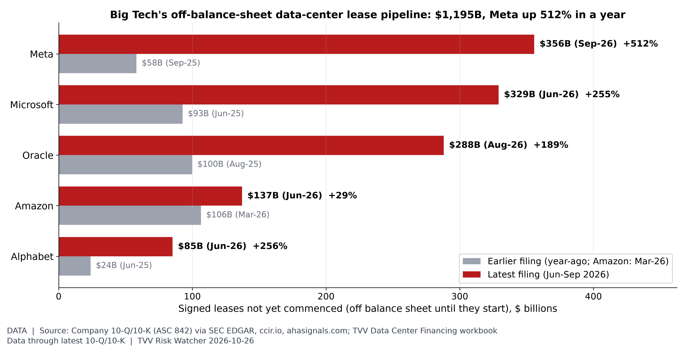
The hidden AI lease bill. Signed but not-yet-commenced leases (ASC 842, mostly data centers) total $1,195B across Meta, Microsoft, Oracle, Amazon and Alphabet in their latest filings; for the four with year-ago figures they rose from $275B to $1,058B. Meta $356B (+512%), Microsoft $329B, Oracle $288B (+189%). These obligations sit outside reported debt until each lease starts. Big Tech reports Oct 28-29. [Data; data as of latest 10-Q/10-K (Jun-Sep 2026); compiled Oct 25] Source: sec.gov data page
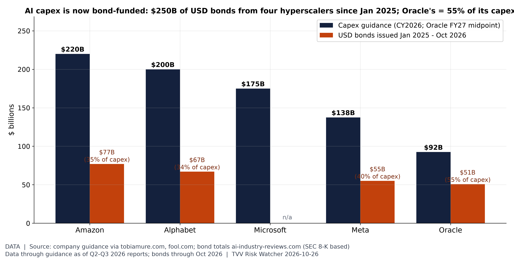
Capex vs bonds before earnings. 2026 capex guidance: Amazon $220B, Alphabet $200B, Microsoft $175B, Meta $137.5B, Oracle $92.5B (FY27 midpoint). Amazon, Alphabet, Meta and Oracle sold $250B of USD bonds Jan 2025-Oct 2026; Oracle's $50.8B equals 55% of a year's capex (Meta's excludes $27.3B of Hyperion SPV notes). Earnings Oct 28-29. [Data; data as of guidance as of Q2-Q3 2026 reports; bonds through Oct 2026] Source: ai-industry-reviews.com data page
TECHVESTVENTURES ACTION-ALERT — October 26, 2026
EDITOR — Michael Hentschel
Most news events require or spawn no action or reaction, some (but not many) are or become warnings. We draw attention to substantial lifestyle risks and market risks in particular, some created by Mid-Term Vote anxieties, Middle East tensions, vast over-indebtedness globally, and other events we track. Longer term but capable of causing sudden power surges as serious as the Carrington Event. Climate instability occasioned by long-term cyclical solar electro-magnetic flares, is becoming much more prominent and even more likely. New AI predictive analytics and pattern seekers are pointed in some of these directions, and we monitor imminent likelihood. Some readers might hedge and others might see opportunity. The above is not investment advice.
Graph Sources
• Where geopolitical risk is concentrated: https://www.matteoiacoviello.com/gpr.htm
• Where geopolitical risk is concentrated (data): https://www.matteoiacoviello.com/gpr_files/data_gpr_export.xls
• Violence against civilians in context: https://ucdp.uu.se/downloads/index.html#candidate
• Violence against civilians in context (data): https://ucdp.uu.se/downloads/candidateged/GEDEvent_v26_0_9.csv
• Weekly M5+ quake count: https://earthquake.usgs.gov/fdsnws/event/1/
• Weekly M5+ quake count (data): https://earthquake.usgs.gov/earthquakes/search/
• The month ahead in space weather: https://www.swpc.noaa.gov/products/27-day-outlook-107-cm-radio-flux-and-geomagnetic-indices
• The month ahead in space weather (data): https://services.swpc.noaa.gov/text/27-day-outlook.txt
• Where the AI build-out is, and how it is financed: https://epoch.ai/data/data-centers
• Where the AI build-out is, and how it is financed (data): https://investor.atmeta.com/investor-news/press-release-details/2025/Meta-Announces-Joint-Venture-with-Funds-Managed-by-Blue-Owl-Capital-to-Develop-Hyperion-Data-Center/default.aspx
• Where the AI build-out is, and how it is financed (data): https://ai-industry-reviews.com/research/ai-data-center-debt-financing-statistics-2026/
• Where the AI build-out is, and how it is financed (data): https://stargate.how/news/current-status-us-stargate-data-centers
• The liquidity buffer is empty: https://fred.stlouisfed.org/series/RRPONTSYD
• The liquidity buffer is empty (data): https://fred.stlouisfed.org/series/WTREGEN
• The liquidity buffer is empty (data): https://fred.stlouisfed.org/series/WRESBAL
• Critical Water Shortage, US view: https://droughtmonitor.unl.edu/DmData/DataDownload.aspx